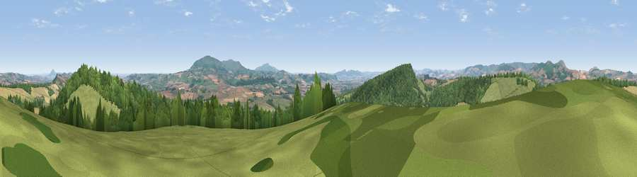

Viewpoint near Broadstone
#3750 in England · top 9% of its area beats it · near BroadstoneWhere it is
The exact computed spot (SO 52525 90175). Click the marker for map links.
The view, rendered

A 360° render of this exact spot computed from the terrain model, tree cover and land cover — summer colours, afternoon light, calibrated against photographs of famous viewpoints. Real trees, hedges and buildings will differ in detail.
The panorama
Grey silhouette: terrain skyline in each direction (720 bearings, Earth curvature and refraction included). Dashed green: skyline with trees (+15 m) and buildings (+8 m) as obstacles. Blue strip: how far the ground is visible on each bearing.
Where the view opens
Wedge length = distance to the farthest visible ground on that bearing (vegetation-aware). Rings at 10, 25 and 50 km.
What fills the view
38% grassland · 36% woodland · 26% cropland
Angular shares of the visible panorama (visual magnitude), not map area. Landscape diversity 0.48 (0–1 Shannon).
Key numbers
More beautiful places nearby
The staircase of upgrades: each row has a higher view potential than everything closer. Driving times are estimates from straight-line distance, calibrated against real road routing — check an actual route before setting out.
| Place | Direction | Drive | Score |
|---|---|---|---|
| Diddlebury Common | SW · 5 km | ~12 min | 74.5 |
| Hope Bowdler Hill | NW · 6 km | ~13 min | 78.9 |
| Caer Caradoc Hill | NW · 7 km | ~15 min | 81.7 |
| Viewpoint near Abdon | ESE · 8 km | ~16 min | 82.6 |
| The Lawley | NNW · 8 km | ~16 min | 85.8 |
| Viewpoint near Little Wenlock | NNE · 20 km | ~34 min | 86.6 |
| North Hill | SSE · 50 km | ~71 min | 86.8 |
| Worcestershire Beacon | SSE · 51 km | ~72 min | 87.1 |
52.50739, -2.70090 · source: screening · position refined by local search. Computed location — check access rights before visiting.